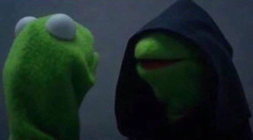

Evil Kermit is a captioned image series featuring a screenshot of the Muppet character Kermit the Frog talking with his nemesis Constantine dressed as a Sith Lord from Star Wars, who instructs him to perform various indulgent, lazy, selfish and unethical acts.
